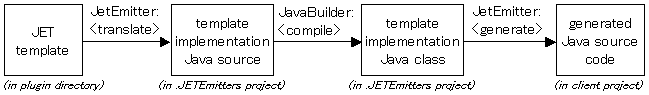
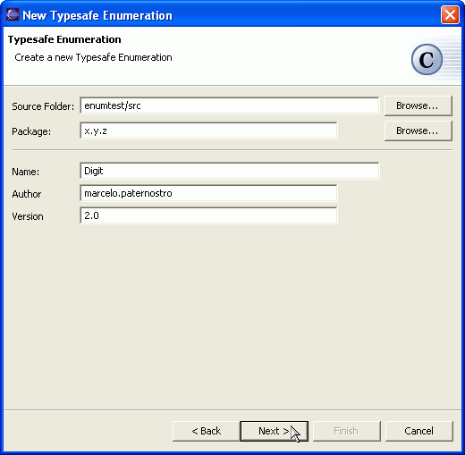
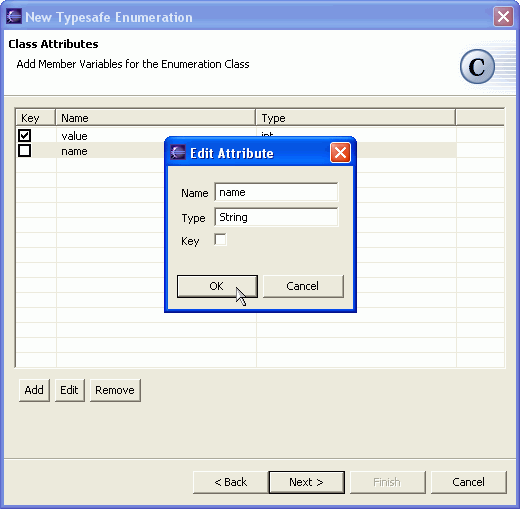
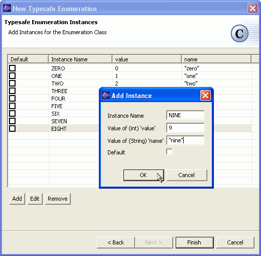
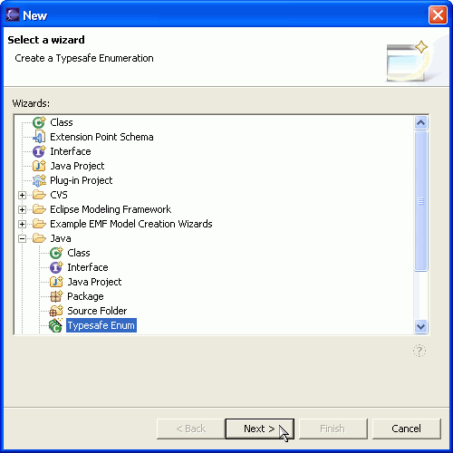
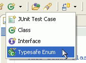

| Eclipse Corner Article |

Summary
In Part 2 of this JET (Java Emitter Templates) tutorial, we will take a look at the JET engine API. You will learn how to write plug-ins that use the classes in the JET package to generate Java source code.
As a real-world example, we will create a plug-in that takes user input and generates a Typesafe Enumeration class. The generated source code is based on a JET template that can be distributed with the plug-in, allowing users of the plug-in to customize the generated code by editing the template.
This article also provides a short reference to the JET API.
Contributed by Remko Popma, Azzurri Ltd., remko.popma at azzurri dot jp, August 26, 2003. Used with permission. Last update: January 3rd, 2007.
Introduction
Some JET Classes
A Plug-in that Generates Source Code
Conclusion
Appendix
Resources
|
Translation vs. Generation An aspect of JET templates that is at first confusing is that generating text takes two steps: translation and generation. The first step is translating the template to a template implementation class. The second step is using this template implementation class to generate the text. If your goal with JET is to generate Java source code, it can be confusing that the template translation step also results in Java source code. Remember that this source code is not the generated text. The source code that is the result of the translation step is simply another form of the template. If you have used JSP and servlets before, you can think of a JET template as being equivalent to a JSP page. A JET template is translated to a template implementation class, just like a JSP page is translated to a servlet. The second step, where the template implementation class generates text, is equivalent to the servlet creating and returning HTML. |
Part 1 of this tutorial introduced JET templates and explained how you can convert a project to a JET project to have the JET Builder automatically translate templates in your project to template implementation classes.
In part 2 of this tutorial, we will focus on writing a plug-in that uses the classes in the JET package to generate Java source code. A plug-in that generates text from a JET template can no longer rely on the JET Nature and JET Builder to automatically translate templates. This is because JET Nature and JET Builder operate only on workspace projects, not on plug-ins. Plug-ins need to use the classes in the JET package to translate their templates.
To run the example or view the source for code for this article you can unzip org.eclipse.emf.examples.jet.article2_2.3.0.zip into your plugins subdirectory. To use the example plug-in, you must have EMF installed. I am using version 2.3.0 M4.
The next section will discuss some of the classes in the org.eclipse.emf.codegen package. We will see what the steps are to generate source code with JET, and how the JET engine classes fit in. If you are anxious to see some code that shows how to use these classes in practice, you can go straight to A Plug-in that Generates Source Code.
In this section, we will take a closer look at some of the classes in the JET package. They can roughly be divided into two groups:
The lower-level classes are not discussed in-depth in this article. For a description of all classes in the org.eclipse.emf.codegen plug-in, see the JET API Overview section below. In the rest of this section, we will focus on a few of the higher-level classes.
JETCompiler is the core class for template translation. This class is responsible for translating templates to the Java source code of a template implementation class. The actual translation is delegated to other classes in the same package. Clients create a JETCompiler object for a particular template and then call the parse method followed by the generate method to write the Java source code for the resulting template implementation class to a specified stream.
JETEmitter provides a convenient high-level API for users of the JET package. The generate method of this class combines template translation and text generation into a single step. By taking care of the gory details of translating templates and compiling the Java source code of the translated template implementation class, JETEmitter lets you focus on the final generator output.
Another way of looking at JETEmitter is that it abstracts away the translation step and lets you pretend that you can directly generate text with a template. Following the Law of Leaky Abstractions, we cannot always get away with this, and the JETEmitter Gotchas section below points to a few places where you have to be careful.
JETEmitter is the class we will be using in our plug-in, so we will go into a little more detail here.
A JETEmitter object is constructed with the uri of the template used to generate text. Any type of uri is acceptable as long as a protocol handler is available. This means that file:/ uris, ftp:/ uris and http:/ uris can all be used. Eclipse adds special protocol handlers for platform:/base/, platform:/plugin/, platform:/fragment/ and platform:/resource/ uris, so plug-ins can use a uri like platform:/resource/myproject/myfolder/mytemplate.jet to specify a template file. Note: Eclipse 3.0 has introduced bundleentry to its list of special protocols. It should be used in references to Eclipse elements such as plug-ins and features.
In our example plug-in, we will distribute our template file together with our plug-in, so the template file will be located in a myplugin/templates folder under the Eclipse plugins folder. The following code can then be used to locate and generate a template from this folder:
String pluginId = "myplugin.id";
String base = Platform.getBundle(pluginId).getEntry("/").toString();
String uri = base + "templates/myTemplate.javajet";
JETEmitter emitter = new JETEmitter(uri);
String generatedText = emitter.generate(new Object[] {parameter});
After constructing a JETEmitter object, clients then call generate on it to generate text. The generate method will perform the following steps:
* .JETEmitters is the default name for the project that is created during the template translation. This value can be changed by the setProjectName method.
Our example plug-in will use JETEmitter and save the generated text to a Java source file in the workspace. The figure below shows the steps for generating source code using JETEmitter.

The JETEmitter class combines template translation and text generation into a single step, which makes it a very convenient tool. However, it is important that you know what takes place under the hood, otherwise you might be in for some nasty surprises. This section highlights some "gotchas" that I ran into, so that you don't make the same mistakes.
It is not easy to use JET outside of Eclipse. JET is designed to run only as a workspace application. Any application using JET must minimally run as an Eclipse "headless" application so that plug-in initialization takes place. (The term headless refers to running Eclipse without the user interface.)
This means that using JETEmitter from a simple standalone application (a standard Java class with a main method) will not work:
// This fails: cannot use JETEmitter from a standalone application
public static void main(String[] args) {
JETEmitter emitter = new JETEmitter("/myproject/templates/HelloWorld.txtjet");
// this will throw a NullPointerException
String result = emitter.generate(new NullProgressMonitor(), {"hi" });
System.out.println(result);
Note that this is not a restriction of just the JETEmitter class, many of the classes in the org.eclipse.emf.codegen plug-in have dependencies on other plug-ins. The Appendix section below has more details on using JET from standalone applications.
In the rest of this article we will assume that our code is running from inside a plug-in.
You may get a NoClassDefFoundError when you pass a custom object as the argument to the JETEmitter.generate method. This can happen if the object you pass as the argument is not one of the java "bootstrap" classes (the bootstrap classes are the runtime classes in rt.jar and internationalization classes in i18n.jar).
To prevent this error you must specify the class loader of your plug-in when using JETEmitter. If no class loader is specified, JETEmitter uses the class loader of its own class, which is usually the class loader for the org.eclipse.emf.codegen plug-in, and this class loader can't see much. In recent versions of EMF (since version 1.1.0 build 20030527_0913VL), JETEmitter has a constructor that takes a class loader argument.
Note that another way to specify a class loader is to subclass JETEmitter in your own project; if no class loader is specified, JETEmitter will use the class loader of this subclass. (If you are using an older version of EMF, there are no constructors that take a class loader argument and you will have no choice but to subclass JETEmitter in your own project.)
The example below shows an action class that translates and invokes a selected
template using JETEmitter. The example shows how a JETEmitter can be constructed
 with a class loader parameter or by
with a class loader parameter or by  constructing
an anonymous subclass.
constructing
an anonymous subclass.
package org.eclipse.emf.examples.jet.article2.actionexample;
// imports omitted
public class EmitAction implements IActionDelegate {
protected ISelection selection;
public void selectionChanged(IAction action, ISelection selection) {
this.selection = selection;
action.setEnabled(true);
}
public void run(IAction action) {
List<?> files = (selection instanceof IStructuredSelection)
? ((IStructuredSelection) selection).toList()
: Collections.EMPTY_LIST;
for (Iterator<?> i = files.iterator(); i.hasNext();) {
IFile file = (IFile) i.next();
IPath fullPath = file.getFullPath();
String templateURI = "platform:/resource" + fullPath;
ClassLoader classloader = getClass().getClassLoader();
 JETEmitter emitter = new JETEmitter(templateURI, classloader);
// or: use an anonymous subclass
JETEmitter emitter = new JETEmitter(templateURI, classloader);
// or: use an anonymous subclass
 // emitter = new JETEmitter(templateURI) {}; // notice the brackets
try {
IProgressMonitor monitor = new NullProgressMonitor();
String[] arguments = new String[] { "hi" };
String result = emitter.generate(monitor, arguments);
saveGenerated(result, file);
} catch (Exception e) {
throw new RuntimeException(e);
}
}
}
// saveGenerated method omitted
}
// emitter = new JETEmitter(templateURI) {}; // notice the brackets
try {
IProgressMonitor monitor = new NullProgressMonitor();
String[] arguments = new String[] { "hi" };
String result = emitter.generate(monitor, arguments);
saveGenerated(result, file);
} catch (Exception e) {
throw new RuntimeException(e);
}
}
}
// saveGenerated method omitted
}
JETEmitter translates your templates to Java source files in the .JETEmitters project, and invokes the JavaBuilder to compile these source files. If your templates use classes that are not standard Java classes, or not in the EMF plug-in, you will need to add these classes to the class path of the .JETEmitters project, or the JavaBuilder cannot compile the template implementation source files. Fortunately, JETEmitter provides a simple way to do this through the method addVariable which adds a classpath variable to the .JETEmitter project.
A Classpath Variable is a workspace-wide name that is used in Eclipse to refer to a JAR file or directory. The list of all such variables can be seen using the Window > Preferences > Java > Classpath Variables menua action.. Your program will need to add a class path variable for each JAR file or directory that is needed on the class path of the .JETEmitter project.
In this part of the JET Tutorial, we will write an Eclipse plug-in that uses a JET template to generate Java source code for typesafe enumerations, which were quite popular before Java 5.0, when enums were introduced to the language.
Our plug-in has to perform the following tasks:
In the following sections we will go through the steps above one by one.
Let's have a look at a typesafe enumeration class to see what kind of source code we want to generate. The Digit class below is an example typesafe enum.
// an example typesafe enum
package x.y.z;
public class Digit {
public static final Digit ZERO = new Digit(0, "zero");
public static final Digit ONE = new Digit(1, "one");
public static final Digit TWO = new Digit(2, "two");
public static final Digit THREE = new Digit(3, "three");
// ...
public static final Digit NINE = new Digit(9, "nine");
private static final Digit[] ALL =
{ZERO, ONE, TWO, THREE, FOUR, FIVE, SIX, SEVEN, EIGHT, NINE};
private final int value;
private final String name;
private Digit(int value, String name) {
this.value = value;
this.name = name;
}
 public static Digit lookup(int key) {
for (int i = 0; i < ALL.length; i++) {
if (key == ALL[i].getValue()) { return ALL[i]; }
}
// lookup failed:
// we have no default Digit, so we throw an exception
public static Digit lookup(int key) {
for (int i = 0; i < ALL.length; i++) {
if (key == ALL[i].getValue()) { return ALL[i]; }
}
// lookup failed:
// we have no default Digit, so we throw an exception
 throw new IllegalArgumentException("No digit exists for " + key);
}
public int getValue() { return value; }
public int getName() { return name; }
public String toString() { return getName(); }
}
throw new IllegalArgumentException("No digit exists for " + key);
}
public int getValue() { return value; }
public int getName() { return name; }
public String toString() { return getName(); }
}
Let's take a closer look at this class. First of all, the Digit class has several
 instances - the constants
ZERO, ONE, TWO, etc. Each instance is defined by its Java variable name, "ZERO",
"ONE", "TWO"..., and the values for each
instances - the constants
ZERO, ONE, TWO, etc. Each instance is defined by its Java variable name, "ZERO",
"ONE", "TWO"..., and the values for each  attribute
of the enumeration class. Most typesafe enums have one or more attributes. The
Digit class has two attributes: a value integer and a name
String.
attribute
of the enumeration class. Most typesafe enums have one or more attributes. The
Digit class has two attributes: a value integer and a name
String.
Our example Digit class also has a  lookup
method, which returns the instance whose value attribute equals
the specified int parameter. A lookup method introduces the concept of key
attributes. Many typesafe enums have one or more attributes that uniquely
distinguish one instance from another.
lookup
method, which returns the instance whose value attribute equals
the specified int parameter. A lookup method introduces the concept of key
attributes. Many typesafe enums have one or more attributes that uniquely
distinguish one instance from another.
Note that key attributes are not required: the Java VM guarantees that every newly constructed object is unique, so it is possible to have typesafe enumerations that have no attributes at all, and simply distinguish their instances with the == instance identity operator. This works fine, but often it is convenient to have a key attribute that uniquely identifies an instance, and a lookup method that finds an instance for a specified key value.
Our template does have a lookup method, so we need to decide what
to do if  no instance is found
for the specified key value. Basically there are three options: throwing an
Exception, returning a designated "default" instance, or returning
null. Which option is best depends on the application in which
the class is used, so we should probably let the user decide.
no instance is found
for the specified key value. Basically there are three options: throwing an
Exception, returning a designated "default" instance, or returning
null. Which option is best depends on the application in which
the class is used, so we should probably let the user decide.
Now that we've studied typesafe enums in more detail, let's summarize what is customizable in a typesafe enumeration:
A simple model for the customizable parts of a typesafe enum could look something like this:
| TypesafeEnum |
| getInstances() : Instance[] getAttributes() : Attribute[] getKeyAttributes() : Attribute[] getDefaultInstance() : Instance getPackageName() : String getClassName() : String |
| Instance |
| getName() : String getAttributeValues() : Properties getAttributeValue(Attribute) : String isDefault() : boolean |
| Attribute |
| getName() : String getType() : String isKey() : boolean |
In the next section we will use these classes to convert our Digit class to a JET template for typesafe enumerations.
Now that we have a model, we can take our Digit class and replace all Digit-specific code with JET scriptlets and expressions that call our model classes. The resulting template could look something like this:
<%@ jet package="translated" imports="java.util.* org.eclipse.emf.examples.jet.article2.model.*" class="TypeSafeEnumeration" %> <% TypesafeEnum typesafeEnum = (TypesafeEnum) argument; %> package <%=typesafeEnum.getPackageName()%>; /** * This final class implements a type-safe enumeration * over the valid instances of a <%=typesafeEnum.getClassName()%>. * Instances of this class are immutable. */ public final class <%=typesafeEnum.getClassName()%> { <% for (Iterator<Instance> i = typesafeEnum.instances(); i.hasNext(); ) { %> <% Instance instance = i.next(); %> // instance definition public static final <%=typesafeEnum.getClassName()%> <%=instance.getName()%> =
As you can see, the template calls some methods that were not in the simple
model we introduced earlier. We have added a few convenience methods, like the
 Attribute.getCappedName()
and
Attribute.getCappedName()
and  getUncappedName()
methods. Such methods help to keep the template simple.
getUncappedName()
methods. Such methods help to keep the template simple.
Another example of methods we added to the model are the  TypesafeEnum.constructorParameterDescription()
method and the
TypesafeEnum.constructorParameterDescription()
method and the  Instance.constructorValues()
method. The implementation of the constructorValues method is shown
below.
Instance.constructorValues()
method. The implementation of the constructorValues method is shown
below.
// class Instance
/**
* Convenience method that returns the attribute values of this instance,
* in the order expected by the constructor of this instance.
*
* @return a comma-separated list of all attribute values of this instance,
* formatted like attrib1-value, attrib2-value (, ...)
*/
public String constructorValues() {
StringBuffer result = new StringBuffer();
for (Iterator<Attribute> i = getType().attributes(); i.hasNext(); ) {
Attribute attribute = i.next();
result.append(getAttributeValue(attribute));
if (i.hasNext()) {
result.append(", ");
}
}
return result.toString();
}
The constructorValues method loops through the attributes of the typesafe enum, looks up the value for each attribute in the instance, and concatenates these values into a string, separated by commas. For example, in our Digit typesafe enum class above, this method would return "0, \"zero\"" for the "ZERO" instance.
We could have looped through the attribute values in the template, but that would have made the template much more difficult to read. Pushing this logic into the model made the template more readable and easier to maintain. On the other hand, we lost some flexibility because users cannot customize that logic anymore by editing the template. This is a trade-off you have to make. Which is better depends on your template and your application.
Now that we have a model and a template, we still need two more pieces to finish our plug-in: we need a GUI to collect values from the user to populate our model with, and we need to invoke our template with the populated model to generate source code and save this source code to a location in the workspace.
Let's start with the GUI. The workbench provides a few wizards that do something similar to what we have in mind, for example the New Class, New Interface and New JUnit TestCase wizards. It probably makes sense to have our GUI look similar to these wizards and make it accessible from the standard menu and toolbar locations.
Our wizard has three pages. The first page, shown below, looks like a simplified version of the New Class wizard. In fact, we are using the same framework that the New Class wizard uses, the org.eclipse.jdt.ui.wizards package. In the first page, we collect the package name and the class name of the typesafe enum, and the location where the result should be saved.

Our second page collects information on the attributes of the typesafe enum class. Every attribute has a name and a type, and may be one of the key attributes. Our second wizard page is shown below:

Our third and last wizard page, shown below, collects information on the instances of the typesafe enum. The user inputs the instance name, and for each instance provides values for all attributes.
Finally, one of the instances may be the "default" instance, which is the instance returned by the lookup method if no instance was found for the specified key attribute values.

Now that we have a GUI to populate our model, we can finally use what we learned in the first part of this article, and generate source code with our template.
When a user presses Finish on the wizard, the performFinish method
in our wizard is called. The code below shows how we  use
a custom subclass of JETEmitter to
use
a custom subclass of JETEmitter to  add
the JAR file of our plug-in to the class path of the .JETEmitters project
before we
add
the JAR file of our plug-in to the class path of the .JETEmitters project
before we  call generate on
the JETEmitter. The generated typesafe enum source code is
call generate on
the JETEmitter. The generated typesafe enum source code is  saved
to the location in the workspace that the user specified.
saved
to the location in the workspace that the user specified.
// class NewTypesafeEnumCreationWizard
protected void finishPage(IProgressMonitor monitor)
throws InterruptedException, CoreException {
String pluginId = "org.eclipse.emf.examples.jet.article2";
String base = Platform.getBundle(pluginId).getEntry("/").toString();
String relativeUri = "templates/TypeSafeEnumeration.javajet";
JETEmitter emitter = new JETEmitter(base + relativeUri, getClass().getClassLoader());
emitter.addClasspathVariable("JET_TUTORIAL", pluginId);
TypesafeEnum model = mPage1.getTypesafeEnumModel();
IProgressMonitor sub = new SubProgressMonitor(monitor, 1);
String result = emitter.generate(sub, new Object[] { model });
monitor.worked(1);
IFile file = save(monitor, result.getBytes());
selectAndReveal(file);
openResource(file);
}
Our final code snippet below shows the part of our plugin.xml configuration file where we register our wizard as a contribution to the workbench.
<extension point="org.eclipse.ui.newWizards">
<wizard
name="Typesafe Enum"
icon="icons/newenum_wiz.gif"
category="org.eclipse.jdt.ui.java"
id="org.eclipse.emf.examples.jet.article2.ui.NewTypesafeEnumCreationWizard">
<description>
Create a Typesafe Enumeration
</description>
<class class="org.eclipse.emf.examples.jet.article2.ui.NewTypesafeEnumCreationWizard">
<parameter name="javatype" value="true"/>
</class>
</wizard>
</extension>
Now our wizard is activated when users select File > New > Other > Java > Typesafe Enum from the workbench, as shown in the image below.

Note that we set the  javatype
attribute to true in the wizard extension element in the plugin.xml
file. This will cause our wizard to show up as an action on the toolbar in the
Java Perspective, as shown in the image below.
javatype
attribute to true in the wizard extension element in the plugin.xml
file. This will cause our wizard to show up as an action on the toolbar in the
Java Perspective, as shown in the image below.

When using JET, you need to decide whether you want to distribute your templates with your application, or distribute only the template implementation classes.
If your goal is to simplify the text generation capabilities of your application, then using JET Nature and JET Builder to automatically translate your templates is a good choice. See JET Tutorial Part 1 for details. In that case you only need to distribute the translated template implementation classes with your application, not the templates themselves.
On the other hand, if it is important for your application that users have ultimate control over the generated text, you may want to distribute the template files themselves with your application. In that case, you will need to translate these templates every time you generate text. The plug-in we wrote in this article is an example of this type of application.
This article explained what classes are available in the JET package to achieve this and showed how to use these classes with an Eclipse plug-in. The appendix below provides an overview of the JET API and shows how it can be used in headless or standalone applications.
| Class | Description |
|---|---|
| CodeGen |
The CodeGen class can translate a JET template to Java source code and optionally merge the template implementation Java source code with an existing Java class. CodeGen can be used as an Eclipse headless application. The run method expects a String array parameter of two or three elements:
|
| CodeGenPlugin | The plug-in class for the JET package. |
| Class | Description |
|---|---|
| IJETNature | Interface extending org.eclipse.core.resources.IProjectNature. Defines some of the properties that a JET nature has. Implemented by JETNature. Used as a filter for project property pages by the org.eclipse.emf.codegen.ui plug-in. |
| JETAddNatureOperation | A org.eclipse.core.resources.IWorkspaceRunnable for adding the JET nature to a project in the workspace. Used by the AddJETNatureAction in the org.eclipse.emf.codegen.ui plug-in. |
| JETBuilder | This class extends org.eclipse.core.resources.IncrementalProjectBuilder. When its build method is invoked, it delegates to JETCompileTemplateOperation to translate all templates in the workspace project that have been changed since the previous build. Templates must be located in one of the folders specified as Template Containers in the JET Nature of the project. |
| JETCharDataGenerator | Responsible for a part of the template translation process. Generates strings for the character data present in the template file. Used by JETCompiler. |
| JETCompiler | This is the core class for template translation. This class is responsible for translating templates to the Java source code of a template implementation class. The actual translation is delegated to other classes in this package. A JETParser is used to parse the template into template elements. JETCompiler implements the JETParseEventListener interface and registers itself with the parser to be notified when the parser recognizes a template element. For every recognized template element, JETCompiler uses a JETGenerator to translate the template element to Java source code. When the template parsing is complete, JETCompiler uses a JETSkeleton to assemble the Java source code elements to a single compilation unit (a Java class). |
| JETCompileTemplateOperation | This class implements org.eclipse.core.resources.IWorkspaceRunnable so it can execute as a batch operation within the workspace. This operation takes a workspace project, one or more Template Containers and optionally a list of specific template files as constructor parameters. When its run method is invoked, it uses a JETCompiler to translate the template files in the specified workspace project folders to Java source files for template implementation classes. This operation can optionally be configured to trigger a complete build of the project when it is finished to compile the Java source files to .class files. |
| JETConstantDataGenerator | Responsible for a part of the template translation process. Extends JETCharDataGenerator to generate constant declarations for the strings with character data present in the template file. |
| JETCoreElement | Interface for core JET syntax elements (directive, expression, scriptlet and quote-escape). Used by JETParser. |
| JETEmitter | This class provides a convenient high-level API for users of this package. The generate method of this class translates a template to Java source code, compiles this source code to a template implementation class, asks the template class to generate text and finally returns the generated result. This class creates a Java project called .JETEmitters in the workspace, translates the template into this project, and simply calls build on the .JETEmitters project to compile the source code. If translation or compilation fails, a JETException is thrown. A template implementation Java class is "executed" by calling its generate method. |
| JETException | Extends org.eclipse.core.runtime.CoreException, but provides more convenient constructors. |
| JETExpressionGenerator | Responsible for a part of the template translation process. Extends JETScriptletGenerator to translate JET expressions (<%= ... %> stuff) to Java source code. |
| JETGenerator | Interface for generators: classes that know how to translate part of a JET template to a Java source code element. |
| JETMark | A state object used by the JETParser to mark points in the JET character input stream, and delegate the processing of parts of the stream to other objects. |
| JETNature |
This class implements IJETNature so that it can configure a workspace project with the JET Nature. When this nature is added to a project, it adds a JET Builder to the front of the build spec of the project. This nature defines two properties:
These properties are used by the JET Builder when performing a build. |
| JETParseEventListener | Interface for objects that know how to process parts of a JET character input stream. |
| JETParser | The main parser class. Has several inner classes for recognizing core JET syntax elements (directive, expression, scriptlet and quote-escape). When a core JET syntax element is recognized, the actual processing of the element is delegated to a JETParseEventListener. |
| JETReader | An input buffer for the JET parser. Provides a stackStream method that others can call with the character stream to an include file. Also provides many other convenience methods for the parser. |
| JETScriptletGenerator | Responsible for a part of the template translation process. Translates JET scriptlets (<% ... %> stuff) to Java source code. |
| JETSkeleton | This class provides an interface for assembling Java source code elements into a single Java compilation unit (a Java class). Java source code elements are assembled according to a class skeleton definition. A skeleton can be used to add boilerplate code to a translated template implementation class. This class provides a default custom template implementation class skeleton definition, but can also assemble Java elements using a custom skeleton. The actual parsing and generation of Java source code is delegated to classes in the org.eclipse.jdt.core.jdom package. |
| Class | Description |
|---|---|
| JControlModel | A control model that provides dictionaries and rules to drive a merge process. |
| JMerger | A class for merging Java source files. Uses implementation of the interfaces in the org.eclipse.emf.codegen.merge.java.facade package to parse the source code. This class can be used by application code. |
| JPatternDictionary | A dictionary of signatures and java nodes. |
| Class | Description |
|---|---|
| PropertyMerger | A class for merging property files. This class can be used by application code. |
The org.eclipse.emf.codegen.CodeGen class can translate a JET template to Java source code and optionally merge the template implementation Java source code with an existing Java class. CodeGen can be used as an Eclipse headless application ("headless" means that the Eclipse GUI does not start). The plugins/org.eclipse.emf.codegen/test folder in your Eclipse installation contains some scripts for launching the CodeGen class as an Eclipse headless application. These scripts are in Unix format.
 Below is an example
script for Windows. Note that we pass two arguments to the CodeGen class:
Below is an example
script for Windows. Note that we pass two arguments to the CodeGen class:
If the target path already contains a previous translation result, and you want to merge the new translation result with the existing one, you can specify a JMerge control model file as the third argument. The plugins/org.eclipse.emf.codegen/test folder in your Eclipse installation contains an example merge.xml file.
@echo off set ECLIPSE_HOME=C:\eclipse-2.1\eclipse set WORKSPACE=%ECLIPSE_HOME%\workspace set OPTS=-Xmx900M -Djava.compiler=NONE -verify -cp %ECLIPSE_HOME%\startup.jar set MAIN=org.eclipse.core.launcher.Main -noupdate -data %WORKSPACE%
Author: Knut Wannheden (knut.wannheden at paranor.ch)
Binary: jetc-task.jar.
The source: JETCTask.java.
Some notes:
Here's a simple Ant buildfile (the taskdef class path assumes you have Eclipse 3.3 and EMF 2.3.0):
<project default="jetc_multiple_templates">
<property name="eclipse.plugins.dir" location="C:\eclipse-SDK-3.3M4-win32\eclipse\plugins" />
<taskdef name="jetc" classname="ch.paranor.epla.structure.JETCTask">
<classpath>
<pathelement location="jetc-task.jar" />
<fileset dir="${eclipse.plugins.dir}">
<include name="org.eclipse.core.boot_*.jar" />
<include name="org.eclipse.core.resources_*.jar" />
<include name="org.eclipse.core.runtime_*.jar" />
<include name="org.eclipse.jdt.core_*.jar" />
<include name="org.eclipse.emf.codegen_*.jar" />
</fileset>
</classpath>
</taskdef>
<!-- Usage example 1: -->
<!-- Specify the template file in the "template" attribute. -->
<!-- You can use the "class" and "package" attributes to override the -->
<!-- "class" and "package" attributes in the template file. -->
<target name="jetc_single_template">
<mkdir dir="jet-output" />
<jetc template="test.xmljet"
package="com.foo"
class="Test"
destdir="jet-output" />
<javac srcdir="jet-output" destdir="classes" />
</target>
<!-- Usage example 2: -->
<!-- Translate a bunch of template files at once. -->
<!-- You cannot use the "class" and "package" attributes when using a fileset. -->
<target name="jetc_multiple_templates">
<mkdir dir="jet-output" />
<jetc destdir="jet-output">
<fileset dir="jet-templates" includes="*.*jet" />
</jetc>
<javac srcdir="jet-output" destdir="classes" />
</target>
</project>
Substitutes for Missing C Constructs (By Joshua Bloch)
Java Tip 122: Beware of Java typesafe enumerations (By Vladimir Roubtsov)Java Tip 133: More on typesafe enums (By Philip Bishop)
Java and all Java-based trademarks and logos are trademarks or registered trademarks of Sun Microsystems, Inc. in the United States, other countries, or both.